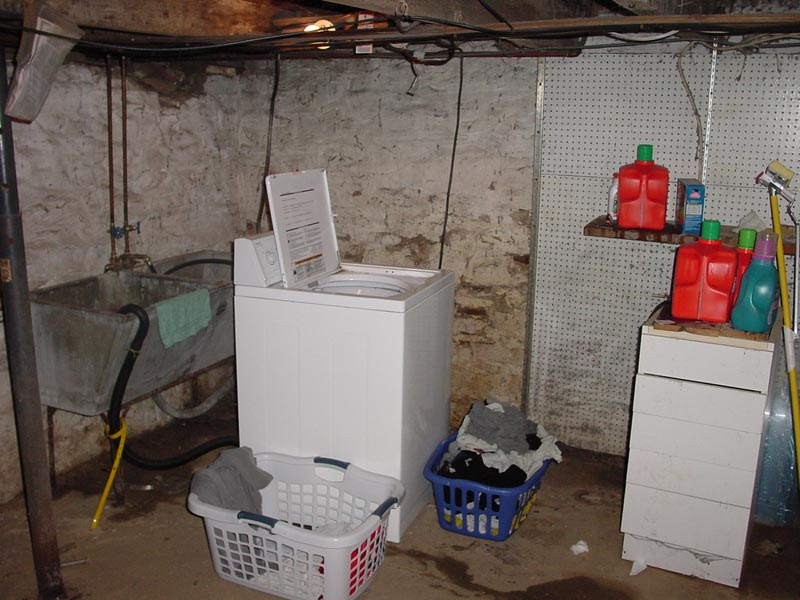

|  |
|
The back corner, with the washer, is probably the most frequently used part of the great room. As long as you don't mind the wiring in the ceiling directly brushing your head as you work, it is a comfortable system. Note how the water is drawn from the much older washtub system. As well, the decorative pile of old detergeant bottles. The pegboard is from a previous resident and is damp from the natural humidity. The wall is whitewashed flagstone and mortar foundation. [ Look left to the archway | A Washtub? | What's in the Washer? | Back to by the stairs | Look right to the detergeant. ] |